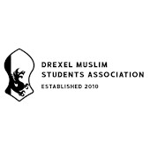
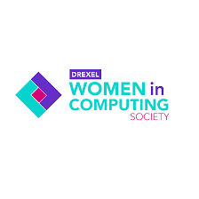

Professional Associations

Muslim Student Association: Drexel Muslim Students Association (DMSA) is a student-run organization that fosters a strong sense of community and Islamic identity among Muslim students at Drexel University by offering religious, educational, social, and interfaith programming while promoting unity, dialogue, and spiritual growth on campus.
Visit DMSA
Women in Computing Society: The Drexel Women in Computing Society (WiCS), the university’s ACM-W chapter, is a supportive community that empowers women in technology through mentorship, events, and networking opportunities, aiming to recruit, retain, and uplift women in computing while welcoming all allies.
Visit WiCSSociety of Artificial Intelligence: Drexel AI is an inclusive student organization that welcomes all levels of interest in artificial intelligence, offering a collaborative community, learning resources, networking, and opportunities to engage in innovative AI research and projects.
Visit SoAICyberDragons: CyberDragons is a student organization dedicated to educating Drexel students about cybersecurity through hands-on labs, industry talks, and collegiate competitions, helping members develop practical skills for securing corporate environments while fostering community and professional growth..
Visit CDs